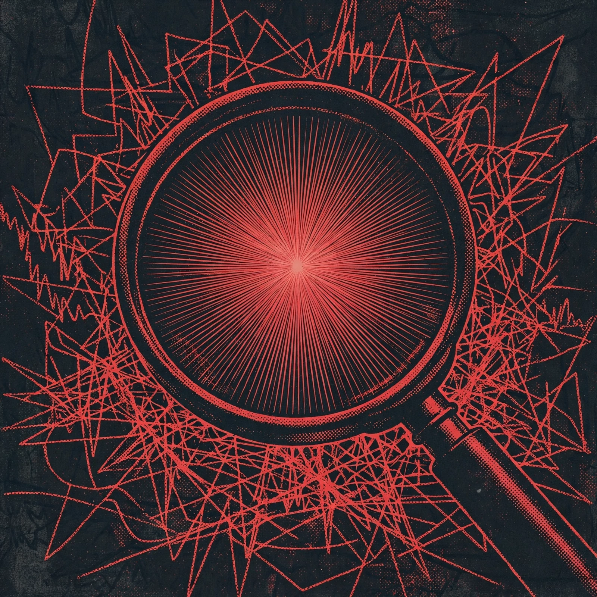
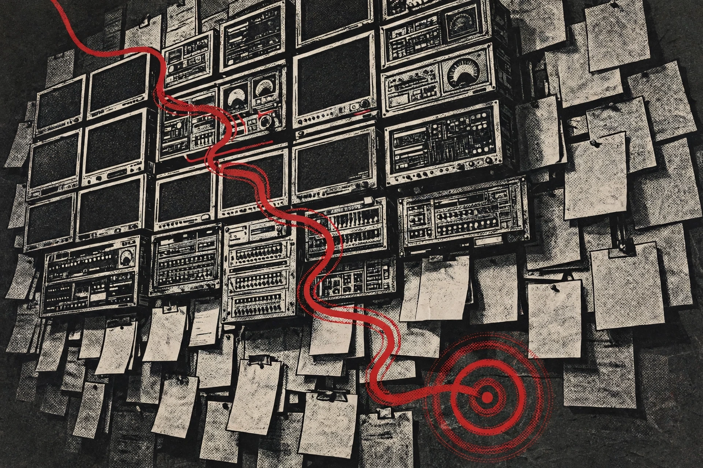
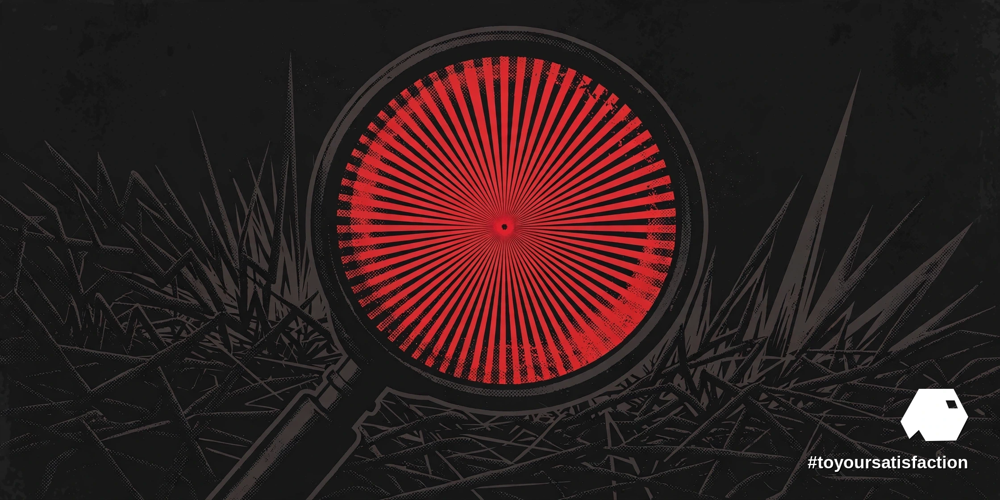

Every responder knows the shape of a major outage. The alert fires, the bridge opens, and then the real work begins: finding the small set of facts that explain a very large failure. The fix, once the cause is known, is often the shortest part of the night.
On October 28, 2026, Freshworks announced the acquisition of Robusta Dev, an incident-intelligence company founded in 2021, for terms that were not disclosed. Robusta began as a Kubernetes troubleshooting tool and was later rebuilt around HolmesGPT, the company open-source agent. The technology now heads into Freshservice, the Freshworks IT service management platform, with findings and timelines flowing into FireHydrant, the incident-orchestration platform Freshworks already owns.
We read the deal as a statement about where incident time actually goes. Diagnosis, response and prevention are being joined into one operating loop instead of three separate hand-offs, and the joining point is search: telemetry, logs, changes and context, assembled fast enough to matter while the clock on the status page keeps moving.
01 · The acquisition
The path Robusta travelled explains the fit. A Kubernetes troubleshooting tool lives close to the machinery, where alerts are raw and context is scarce. Rebuilt around HolmesGPT, the same instinct became an agent that investigates rather than merely reports. Freshworks is buying that investigation habit and placing the habit inside Freshservice, where service teams already work, with incident context flowing into FireHydrant, where responders already coordinate.
Placement is not a detail. Tooling that arrives inside the tools on the desk gets used; tooling that asks teams to open one more console during a crisis gets admired and skipped. The acquisition was framed inside the workflow, not beside the workflow, and that framing gives the technology a chance to become routine practice rather than a demonstration.

02 · Sense, reason, recommend
The working pattern is a three-beat investigation. When an anomaly appears, Robusta agents examine monitoring data, infrastructure telemetry, logs and recent code and configuration changes. The engine then identifies the likely root cause, maps the blast radius across dependent services, and shows the evidence behind the conclusion. Finally, the system recommends remediation steps inside guardrails the customer defines, and engineers review and approve before anything reaches production.
Investigations draw on the customer own environment: business-service context, configuration-database dependencies and change histories from Freshservice, so a diagnosis reflects the estate as built, not a generic textbook. That grounding is the difference between a plausible story and a useful one. A root cause that ignores the change made an hour ago, or the dependency nobody documented, sends responders down a corridor the evidence never supported.
03 · Evidence before action
The design choice that matters most is the order of operations: evidence first, action second, approval between the two. Anyone who has worked a major incident recognises the real bottleneck. The slow part is assembling clues from monitoring tools, alert logs, ticket histories and deployment records, on calls, under pressure. Automating the search compresses the hour. Keeping the recommendation inside customer guardrails, with a human approving the change, keeps the automation honest about where machine confidence ends.

We hold a simple standard for agent work in operations, and the pattern here meets the standard: show the evidence, state the confidence, keep the approval step sacred. An agent that presents a conclusion with the trail attached can be corrected quickly when the trail is wrong. An agent that presents only a verdict asks for faith, and faith is not an operations discipline.
04 · The token-cost problem
Scale imposes a discipline of its own. Enterprise environments generate more raw events than any team, human or artificial, can investigate one by one, and Robusta leadership names the cost of processing those events as a real constraint on the design. An agent that reasons at length over every alert would spend its way past the value of the answers. Triage therefore becomes an economic act: cheap signals first, deep reasoning reserved for the anomalies that earn the spend, and evidence packaged so a responder can verify a conclusion in minutes rather than re-derive the whole search. Token budgets, in incident work, are operations budgets.
The caveat cuts both ways, and honesty requires naming the other edge. Cheap triage can also discard the faint signal that mattered, and a blast-radius map is only as good as the dependency data beneath the map. The technology earns trust the slow way, incident by incident, when the evidence trails hold up under review after the bridge closes.
05 · What to watch
The Technology Coordinator years at Staywired, from 2014 to 2022, were spent inside exactly this arithmetic: alerts, logs, changes and the long first hour. The operations discipline behind NVIDIA-Certified Professional: AI Operations applies the same standard to agents that good on-call culture applies to people. Watch how deeply the Freshservice integration lands, whether the evidence trails hold up under real incident review, and whether buyers report shorter first hours, the metric this category will ultimately be judged by.
We will be watching for the unglamorous evidence: post-incident reviews that cite the agent trail, responders who reach for the investigation before the manual search, and first hours that shrink in published accounts. Search was always the hidden labour of incident response. The category now forming simply admits the fact, and builds the machine for the admission.

References
- Freshworks — “Freshworks Acquires Robusta to Bring AI-Powered Incident Investigation and Prevention to Freshservice”, October 28, 2026: https://www.freshworks.com/theworks/company-news/freshworks-robusta-acquisition/?utm_source=chatgpt.com
- Elets CIO — “Freshworks Acquires Robusta: AI Agents for IT Outages”, October 31, 2026: https://cio.eletsonline.com/artificial-intelligence/freshworks-acquires-robusta-ai-sre-agents-incident-investigation-freshservice/76545/